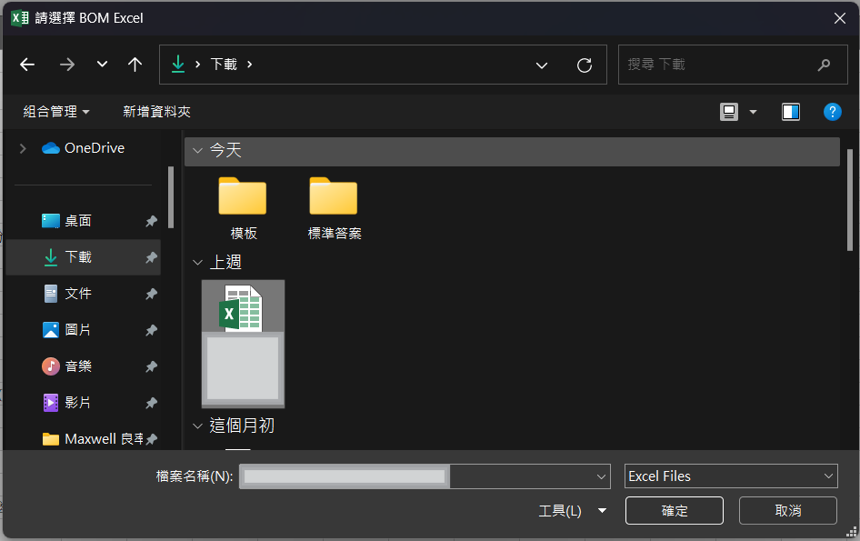
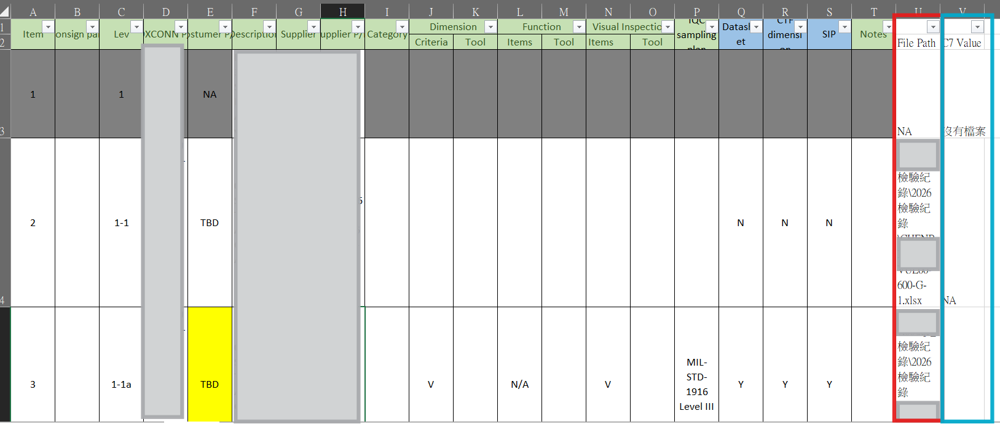

👉 原本需要人工逐筆搜尋的工作，改由 VBA 自動完成。
常常需要從 BOM 整理 SN， 再到檢驗紀錄資料夾搜尋對應資料。
由於資料量很多，而且資料夾層數較深， 人工搜尋需要花費不少時間， 也容易因為看錯資料而重新查找。
因此希望利用 VBA 將重複性的工作自動化， 減少搜尋時間並提高整理效率。
👉 當資料量增加時，整體處理時間會明顯拉長。
最早版本會逐層搜尋所有資料夾， 資料量增加後搜尋時間非常久。
後續改成建立檔案索引方式， 讓搜尋速度明顯提升。
部分檔案使用 DataSheet， 部分檔案使用 DATASHEET。
因此增加不同命名方式判斷， 提高讀取成功率。
一次讀取大量檔案時， Excel 會長時間沒有回應。
後續新增 Batch 處理機制， 每次固定處理部分資料。


| 欄位 | 用途 |
|---|---|
| A | SN |
| U | 檔案路徑 |
| V | 檢驗紀錄結果 |
原本： 需要逐筆搜尋 SN 對應資料。
現在： 工具可以自動建立路徑與結果清單。
大量減少重複搜尋時間。
Option Explicit
Public Sub CollectUniqueSN(ByVal BomFilePath As String)
Dim wbBom As Workbook
Dim wsBom As Worksheet
Dim wsSummary As Worksheet
Dim LastRow As Long
Dim r As Long
Dim NextRow As Long
Dim SN As String
Dim dict As Object
On Error GoTo ErrorHandler
Set dict = CreateObject("Scripting.Dictionary")
Set wsSummary = ThisWorkbook.Worksheets("Summary")
Set wbBom = Workbooks.Open(BomFilePath, ReadOnly:=True)
'Summary從第3列開始寫資料
NextRow = 3
'掃描所有工作表
For Each wsBom In wbBom.Worksheets
LastRow = wsBom.Cells(wsBom.Rows.Count, "D").End(xlUp).Row
'從第3列開始
For r = 3 To LastRow
SN = Trim(CStr(wsBom.Cells(r, "D").Value))
'SN空白跳過
If Len(SN) > 0 Then
'保留第一次出現的SN
If Not dict.Exists(SN) Then
dict.Add SN, True
'複製A:T (包含格式)
wsBom.Range( _
wsBom.Cells(r, 1), _
wsBom.Cells(r, 20) _
).Copy Destination:=wsSummary.Cells(NextRow, 1)
NextRow = NextRow + 1
End If
End If
Next r
Next wsBom
wbBom.Close SaveChanges:=False
MsgBox "唯一SN整理完成，共 " & dict.Count & " 筆資料。", vbInformation
Exit Sub
ErrorHandler:
If Not wbBom Is Nothing Then
wbBom.Close SaveChanges:=False
End If
MsgBox "CollectUniqueSN 錯誤：" & vbCrLf & _
Err.Number & vbCrLf & _
Err.Description, vbCritical
End Sub
Option Explicit
Public Sub SearchInspectionFiles(ByVal RootFolder As String)
Dim wsSummary As Worksheet
Dim LastRow As Long
Dim r As Long
Dim SN As String
Dim FileIndex As Object
Set wsSummary = ThisWorkbook.Worksheets("Summary")
Application.ScreenUpdating = False
Application.StatusBar = "建立檔案索引中..."
Set FileIndex = BuildFileIndex(RootFolder)
LastRow = wsSummary.Cells(wsSummary.Rows.Count, "D").End(xlUp).Row
For r = 3 To LastRow
SN = UCase(Trim(CStr(wsSummary.Cells(r, "D").Value)))
If SN <> "" Then
If FileIndex.Exists(SN) Then
wsSummary.Cells(r, "U").Value = FileIndex(SN)
wsSummary.Cells(r, "U").WrapText = True
Else
wsSummary.Cells(r, "U").Value = "NA"
End If
End If
If r Mod 50 = 0 Then
Application.StatusBar = _
"搜尋中... " & r & "/" & LastRow
DoEvents
End If
Next r
Application.StatusBar = False
Application.ScreenUpdating = True
MsgBox "路徑搜尋完成"
End Sub
Private Function BuildFileIndex(ByVal RootFolder As String) As Object
Dim dict As Object
Dim fso As Object
Dim MainFolder As Object
Dim SubFolder As Object
Dim FileObj As Object
Dim FileNameOnly As String
Dim FullPath As String
Set dict = CreateObject("Scripting.Dictionary")
Set fso = CreateObject("Scripting.FileSystemObject")
Set MainFolder = fso.GetFolder(RootFolder)
For Each SubFolder In MainFolder.SubFolders
For Each FileObj In SubFolder.Files
If LCase(fso.GetExtensionName(FileObj.Name)) = "xlsx" Then
FileNameOnly = UCase(fso.GetBaseName(FileObj.Name))
FullPath = FileObj.Path
If dict.Exists(FileNameOnly) Then
dict(FileNameOnly) = _
dict(FileNameOnly) & vbLf & FullPath
Else
dict.Add FileNameOnly, FullPath
End If
End If
Next FileObj
Next SubFolder
Set BuildFileIndex = dict
End Function
Option Explicit
Public Sub FillC7Values()
Dim wsSummary As Worksheet
Dim LastRow As Long
Dim r As Long
Dim PathText As String
Dim PathArray As Variant
Dim ResultText As String
Dim ThisResult As String
Dim i As Long
Set wsSummary = ThisWorkbook.Worksheets("Summary")
LastRow = wsSummary.Cells(wsSummary.Rows.Count, "D").End(xlUp).Row
Application.ScreenUpdating = False
For r = 3 To LastRow
PathText = Trim(CStr(wsSummary.Cells(r, "U").Value))
If UCase(PathText) = "NA" Then
wsSummary.Cells(r, "V").Value = "沒有檔案"
Else
PathArray = Split(PathText, vbLf)
ResultText = ""
For i = LBound(PathArray) To UBound(PathArray)
If ResultText <> "" Then
ResultText = ResultText & vbLf
End If
ThisResult = GetC7Value(Trim(CStr(PathArray(i))))
ResultText = ResultText & ThisResult
Next i
wsSummary.Cells(r, "V").Value = ResultText
wsSummary.Cells(r, "V").WrapText = True
End If
Next r
Application.ScreenUpdating = True
MsgBox "V欄完成"
End Sub
Private Function GetC7Value(ByVal FilePath As String) As String
Dim wb As Workbook
Dim ws As Worksheet
Dim TargetIndex As Long
Dim DatasheetFound As Boolean
On Error GoTo OpenFail
Application.AskToUpdateLinks = False
Set wb = Workbooks.Open( _
Filename:=FilePath, _
UpdateLinks:=0, _
ReadOnly:=True, _
IgnoreReadOnlyRecommended:=True, _
AddToMru:=False)
DatasheetFound = False
'====================================
' 找 DATASHEET (不分大小寫)
'====================================
For TargetIndex = 1 To wb.Worksheets.Count
If UCase(Trim(wb.Worksheets(TargetIndex).Name)) = "DATASHEET" Then
DatasheetFound = True
Exit For
End If
Next TargetIndex
'====================================
' 找不到 DATASHEET
'====================================
If DatasheetFound = False Then
GetC7Value = "無Datasheet"
wb.Close False
Exit Function
End If
'====================================
' DATASHEET 是第一頁
'====================================
If TargetIndex = 1 Then
GetC7Value = "無Datasheet"
wb.Close False
Exit Function
End If
On Error GoTo ReadFail
Set ws = wb.Worksheets(TargetIndex - 1)
'====================================
' C7 判斷
'====================================
If Trim(CStr(ws.Range("C7").Text)) = "" Then
GetC7Value = "C空白"
Else
GetC7Value = CStr(ws.Range("C7").Text)
End If
wb.Close False
Exit Function
'====================================
' 開檔失敗
'====================================
OpenFail:
GetC7Value = "檔案開啟失敗"
On Error Resume Next
If Not wb Is Nothing Then
wb.Close False
End If
Exit Function
'====================================
' 讀取失敗
'====================================
ReadFail:
GetC7Value = "無法讀取excel"
On Error Resume Next
If Not wb Is Nothing Then
wb.Close False
End If
End Function
Public Sub FillC7Values_Batch()
Dim wsSummary As Worksheet
Dim StartRow As Long
Dim EndRow As Long
Dim LastRow As Long
Dim r As Long
Dim PathText As String
Dim PathArray As Variant
Dim ResultText As String
Dim ThisResult As String
Dim i As Long
Set wsSummary = ThisWorkbook.Worksheets("Summary")
LastRow = wsSummary.Cells(wsSummary.Rows.Count, "D").End(xlUp).Row
'=================================================
' X1保存目前進度
'=================================================
If wsSummary.Range("X1").Value = "" Then
StartRow = 3
Else
StartRow = CLng(wsSummary.Range("X1").Value)
End If
If StartRow > LastRow Then
MsgBox "全部完成！", vbInformation
Exit Sub
End If
EndRow = StartRow + 9
If EndRow > LastRow Then
EndRow = LastRow
End If
Application.ScreenUpdating = False
For r = StartRow To EndRow
PathText = Trim(CStr(wsSummary.Cells(r, "U").Value))
If UCase(PathText) = "NA" Then
wsSummary.Cells(r, "V").Value = "沒有檔案"
Else
PathArray = Split(PathText, vbLf)
ResultText = ""
For i = LBound(PathArray) To UBound(PathArray)
If ResultText <> "" Then
ResultText = ResultText & vbLf
End If
ThisResult = GetC7Value(Trim(CStr(PathArray(i))))
ResultText = ResultText & ThisResult
Next i
wsSummary.Cells(r, "V").Value = ResultText
wsSummary.Cells(r, "V").WrapText = True
End If
Next r
Application.ScreenUpdating = True
wsSummary.Range("X1").Value = EndRow + 1
MsgBox "完成列數：" & StartRow & " ~ " & EndRow, vbInformation
End Sub
這是實習期間開發的 VBA 自動化工具。
一開始只是希望減少人工搜尋工作， 後來逐步加入路徑搜尋(確保資料正確性)、 自動填入檢驗結果等
開發過程中遇到搜尋速度、 檔案命名方式以及大量資料處理等問題， 透過不斷測試與優化， 最終完成目前版本。
雖然還有許多可以改善的地方， 但已經能協助完成大部分原本需要人工執行的工作。